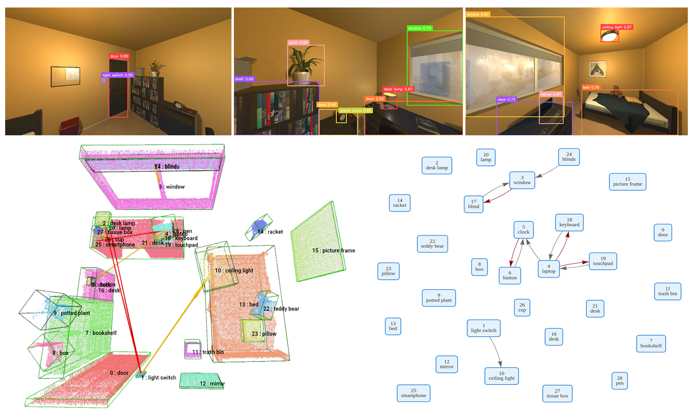
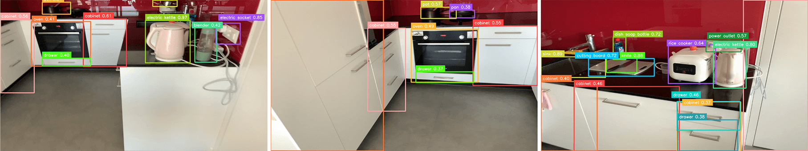

1ETH Zürich 2Microsoft 3University of Bonn & Lamarr Institute
Recent work in 3D scene understanding is moving beyond purely spatial analysis toward functional scene understanding. However, existing methods often consider functional relationships between object pairs in isolation, failing to capture the scene-wide interdependence that humans use to resolve ambiguity.
We introduce FunFact, a framework for constructing probabilistic open-vocabulary functional 3D scene graphs from posed RGB-D images. FunFact first builds an object- and part-centric 3D map and uses foundation models to propose semantically plausible functional relations. These candidates are converted into factor graph variables and constrained by both LLM-derived common-sense priors and geometric priors. This formulation enables joint probabilistic inference over all functional edges and their marginals, yielding substantially better calibrated confidence scores.
To benchmark this setting, we introduce FunThor, a synthetic dataset based on AI2-THOR with part-level geometry and rule-based functional annotations. Experiments on SceneFun3D, FunGraph3D, and FunThor show that FunFact improves node and relation discovery recall and significantly reduces calibration error for ambiguous relations, highlighting the benefits of holistic probabilistic modeling for functional scene understanding.

Click any node in the scene graph (left) to highlight the corresponding object in the 3D point cloud (right), and vice versa. If more than one bounding box overlaps at the clicked location, the visualizer will randomly select one to highlight; keep clicking until you find the correct one, or try clicking on a different part of the object to disambiguate.
FunThor · FloorPlan313
FunGraph3D · 4livingroom
Real-world scene demonstrating that FunFact generalizes beyond the synthetic dataset.

Consider a stove with four knobs and four burners. Naïve pairwise inference treats each knob–burner relation independently, producing 16 unconstrained candidates. Humans resolve this by reasoning holistically: confirming one assignment immediately constrains the rest. FunFact encodes this global structure in a dual factor graph, where scene graph edges become binary variables and cardinality factors enforce structural priors, enabling joint inference that propagates information across the entire scene.
Existing real-world datasets for functional scene understanding lack systematic, comprehensive annotation of functional relations, which prevents the evaluation of metrics that require true negatives (e.g., Precision, F1, and ECE). FunThor addresses this limitation by leveraging the AI2-THOR simulator to produce rule-based annotations with part-level geometry and dense functional ground truth.
| Method | FunGraph3D | |||||
|---|---|---|---|---|---|---|
| Obj R@3 | Obj R@10 | IE R@3 | IE R@10 | Overall R@3 | Overall R@10 | |
| Open3DSG | 50.9 | 58.1 | 21.8 | 33.9 | 33.4 | 43.6 |
| ConceptGraph | 58.0 | 66.3 | 2.5 | 4.1 | 20.1 | 25.2 |
| OpenFunGraph | 70.7 | 79.1 | 44.4 | 57.6 | 55.5 | 65.8 |
| FunFact (Ours) | 91.1 | 96.6 | 68.3 | 78.7 | 77.9 | 86.2 |
| Method | FunGraph3D | |||||
|---|---|---|---|---|---|---|
| Node R@5 | Node R@10 | Edge R@5 | Edge R@10 | Triplet R@5 | Triplet R@10 | |
| OpenFunGraph | 45.8 | 49.3 | 65.1 | 91.4 | 29.8 | 45.0 |
| FunFact (Ours) | 71.1 | 80.0 | 67.9 | 79.9 | 48.7 | 63.9 |
| Method | Mapping (Recall@3 ↑) | Functional Graph | ECE ↓ | |||||
|---|---|---|---|---|---|---|---|---|
| Obj R@3 | IE R@3 | Overall R@3 | Prec ↑ | Recall ↑ | F1 ↑ | ECE All | ECE Ambig. | |
| OpenFunGraph | 54.6 | 41.1 | 51.2 | 23.4 | 12.2 | 16.0 | 0.43 | 0.51 |
| FunFact (Ours) | 68.2 | 69.5 | 68.5 | 31.9 | 49.3 | 38.7 | 0.36 | 0.07 |
If you find this work useful, please cite:
@inproceedings{Fu_2026_funfact,
title = {FunFact: Building Probabilistic Functional 3D Scene Graphs via Factor-Graph Reasoning},
author = {Fu, Zhengyu and Zurbrügg, René and Qu, Kaixian and Pollefeys, Marc and Hutter, Marco and
Blum, Hermann and Bauer, Zuria},
booktitle = {Proceedings of the IEEE/CVF Conference on Computer Vision and Pattern Recognition (CVPR)},
month = {June},
year = {2026}
}